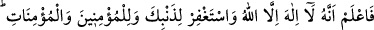
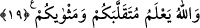

ilişkiden dolayı zina çocuklarının çoğalması, sermaye sahiplerinin büyümesi, bir
takım fasık insanların camilerde yüksek sesle dünya kelamı konuşmaları, münker ve
kötülük ehlinin hak ehline galebe çalıp hükümran olması.”
Hadis-i şerifte şöyle buyrulmuştur: “Emânet zâyi edildiği zaman artık kıyâmeti
bekle.” Peygamberimiz (s.a.)’e: “Ya Rasullallah! Emânetin zâyi edilmesi nasıl olur?
diye sorulunca Peygamberimiz (s.a.): “Emir, yetki, sorumluluk ve yönetim, ehil ve
liyakatli olmayan insanlara terk ve tevdi edildiği zaman kıyameti bekle” buyurdular.
[59]
Şâir der ki:
Allah iyilik murat ettiği kavme
İleri görüşlü ve âdil bir hükümdar verir,
Dünyayı vîran etmek isterse de,
Ülkeyi zâlim birinin pençesine düşürür.
Kelbî şöyle demiştir: Kıyâmetin alâmetleri; mal ve ticâretin çoğalması, yalancı
şâhidlik, hısım ve akraba ilişkilerinin kesilmesi, erdemli insanların azalması,
karaktersiz, alçak, âdî ve bayağı insanların çoğalmasıdır.
Hadis-i şerifte şöyle buyruluyor: “Sizden biriniz azdıran zenginlik, unutturan
fakirlik, her şeyi bozup perişan eden hastalık, saçma sapan konuşturan ihtiyarlık,
ansızın geliveren ölüm, gelmesi beklenen şeylerin en şerlisi deccal belası en müthiş
ve en acı olan kıyametten başka bir şey mi beklediğini sanıyor?”[60]
Herkesin kıyâmeti kendi ölümüdür. Kişi ölmeden evvel ölüm sonrası için
hazırlanmalıdır. Hatta aşk ve muhabbet kıyâmeti olan büyük kıyâmet kopmalı ki işte bu
anda Allah’tan başka her şey helâk olsun. Mecâzî varlık tayini ortadan kalksın. Hakikî
varlık sırrı ortaya çıksın. Allah Teâlâ’dan bizleri kendi razı olduğu işlere koşanlardan
kılmasını istiyoruz. Organ ve kuvvetlerimiz de buna yardımcı olmalıdır. Allah’ın emrini
erteleyenlerden olmamalıyız. Zira vakit geçip gidiyor, zaman süratle uzaklaşıyor.
19. Allah’tan başka ilah olmadığını bil ve kendi günâhın, inanan erkeklerin ve
inanan kadınların günâhı için (Allah’tan) mağfiret dile. Allah, dönüp dolaşacağınız
yeri ve varıp duracağınız yeri bilir.
En büyük sultan “Allah’tan başka” ibâdete layık “ilah olmadığını bil.” Saadet ve
mutluluğun merkezinin Allah’ı birlemek ve O’na itâat etmek; kötülük ve talihsizliğin de